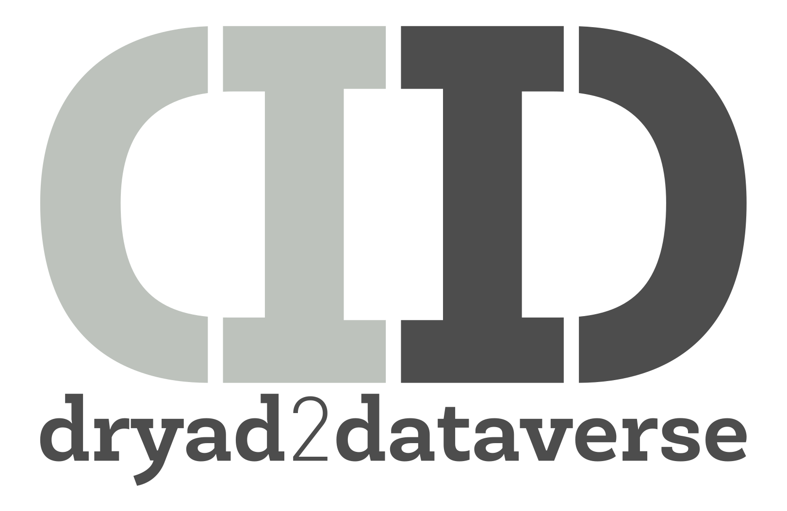

dryad2dataverse - translate, transfer and track¶
¶
Introduction¶
dryad2dataverse is an oddly specific Python programming language library and an associated application which allows easier transfer of metadata and data from a Dryad data repository (ie, https://datadryad.org) to a Dataverse repository.
With these tools it’s possible to:
a) Serialize Dryad metadata to Dataverse JSON
b) Transfer Dryad studies to Dataverse without any knowledge of the somewhat complex Dataverse API
c) Monitor changes in status
The minimum required Python version for dryad2dataverse is Python 3.6, as it is the earliest version which supports f-strings. It was developed using version 3.7.2, and it runs just fine under the [now current] 3.9.2. You can find Python at https://www.python.org/downloads/. No testing was done with Anaconda, only stock Python. That said, it probably works fine with Anaconda.
Not just a library - no programming required¶
If you hate programming, are pressed for time and/or don’t want to read any documentation, dryad2dataverse also comes with a command line tool to do all of these things without requiring any knowledge of Python or programming.
The dryad2dataverse library is free and open source, released under the MIT license. It’s also not written by anyone with a degree in computer science, so as the MIT license says:
Software is provided "as is", without warranty of any kind
Why would I need this?¶
There are a few reasons why you might find this product useful.
-
You are a researcher and you wish to deposit via API into Dataverse repository.
-
You’ve used Dryad, but the Dataverse JSON and API is unfamiliar and complex.
-
You want to write your Dryad JSON and have it convert automatically.
-
Your institution has researchers who have deposited data into Dryad and you wish to copy them into the Dataverse repository which contains the bulk of your institution’s research data (for example, the Dataverse repository at https://dataverse.scholarsportal.info).
-
And on top of that, you don’t want to keep checking to see if there were any updates, so you wish to automate the process.
Quick install¶
git clone https://github.com/ubc-library-rc/dryad2dataverse.git
cd dryad2dataverse
pip install .
Basic usage¶
Converting JSON¶
>>> #Convert Dryad JSON to Dataverse JSON and save to a file
>>> import dryad2dataverse.serializer
>>> i_heart_dryad = dryad2dataverse.serializer.Serializer('doi:10.5061/dryad.2rbnzs7jp')
>>> with open('dataverse_json.json', 'w') as f:
f.write(f'{i_heart_dryad.dvJson}')
>>> #Or just view it this way in a Python session
>>> i_heard_dryad.dvJson
Transferring data¶
Note: a number of variables must be set [correctly] for this to work, such as your target dataverse. This example continues with the Serializer instance above.
>>> import dryad2dataverse.transfer
>>> dv = dryad2dataverse.transfer.Transfer(i_heart_dryad)
>>> # Files must first be downloaded; there is no direct transfer
>>> dv.download_files()
>>> # 'dryad' is the short name of the target dataverse
>>> # Yours may be different
>>> # First, create the study metadata
>>> dv.upload_study(targetDv='dryad')
>>> # Then upload the files
>>> dv.upload_files()
Change monitoring¶
Because monitoring the status of something over time requires persistence, the dryad2dataverse.monitor.Monitor object uses an SQLite3 database, which has the enormous advantage of being a single file that is portable between systems. This allows monitoring without laborious database configuration on a host system, and updates can be run on any system that has sufficient storage space to act as an intermediary between Dryad and Dataverse. This is quite a simple database, as the documentation on its structure shows.
If you need to change systems just swap the database to the new system.
In theory you could run it from a Raspberry Pi Zero that you have in a desk drawer, although that may not be the wisest idea. Maybe use your cell phone.
Monitoring changes requires both the Serializer and Transfer objects from above.
>>> # Create the Monitor instance
>>> monitor = dryad2dataverse.monitor.Monitor()
>>> # Check status of your serializer object
>>> monitor.status(i_heart_dryad)
{'status': 'new', 'dvpid': None}
>>> # imagine, now that i_still_heart_dryad is a study
>>> # that was uploaded previously
>>> monitor.status(i_still_heart_dryad)
{'status': 'unchanged', 'dvpid': 'doi:99.99999/FK2/FAKER'}
>>> #Check the difference in files
>>> monitor.diff_files(i_still_heart_dryad)
{}
>>> # After the transfer dv above:
>>> monitor.update(transfer)
>>> # And then, to make your life easier, update the last time you checked Dryad
>>> monitor.set_timestamp()